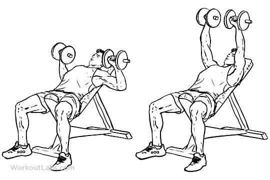
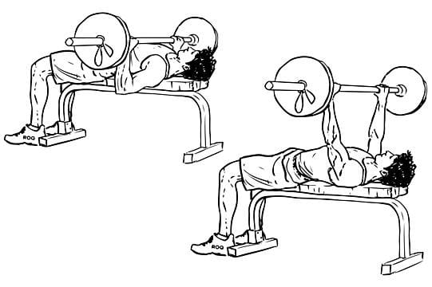
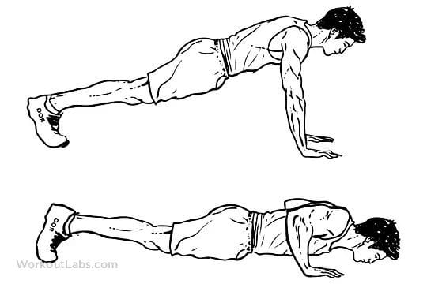
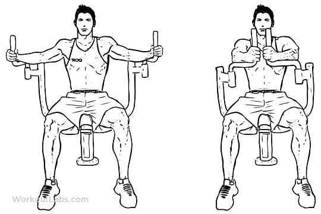
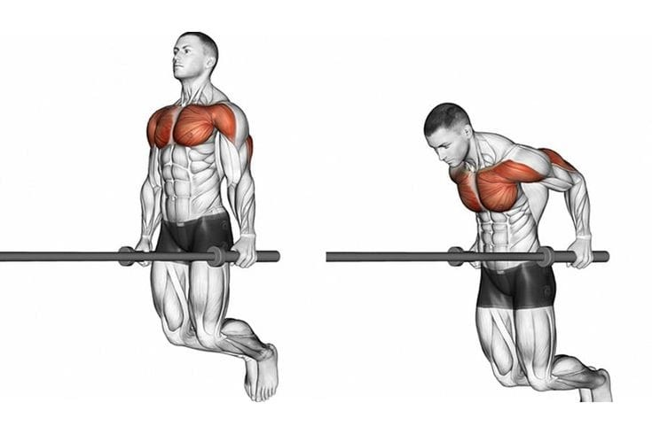

Incline Dumbbell Bench Press

Equipment needed: two dumbbells or barbell, incline bench angled between 45 and 60 degrees
Place feet flat on the floor as you lean back slightly, so your back rests against the bench with a neutral spine.
Start by holding dumbbells or a barbell directly over the shoulders. Face your palms forward, with the thumb wrapped around the handle.
Press the weight upward over your eyes or slightly higher, with elbows extended to 45 degrees.
Inhale and lower dumbbells or barbell slowly and with control until they touch or reach just above the chest, elbows and wrists staying out to the sides.
Repeat the press and perform around 5 reps or more. Keep in mind that reps depend on your goals and the weight. Someone using heavier weights may do fewer reps than someone using lighter weights.
Barbell Flat bench Press

Equipment needed: barbell (additional weights optional) or dumbbells, flat bench
Lie on your back on a flat bench. Grip a barbell with hands slightly wider than shoulder width. The bar should be directly over the shoulders.
Press your feet firmly into the ground and keep your hips on the bench throughout the entire movement.
Keep your core engaged and maintain a neutral spine position throughout the movement. Avoid arching your back.
Slowly lift the bar or dumbbells off the rack, if using. Lower the bar to the chest, about nipple level, allowing elbows to bend out to the side, about 45 degrees away from the body.
Stop lowering when your elbows are just below the bench. Press feet into the floor as you push the bar back up to return to starting position.
Perform 5 to 10 reps, depending on weight used. Perform up to 3 sets.
Push Ups

Push-ups are an exercise in which a person, keeping a prone position, with the hands palms down under the shoulders, the balls of the feet on the ground, and the back straight, pushes the body up and lets it down by an alternate straightening and bending of the arms.
Chest Fly Machine

The chest fly machine is very easy to use. To set up the chest fly machine, set the handles so they’re at chest height and in line with the shoulders when seated. Once seated, squeeze the chest muscles to push the handles together they meet in front of the chest. The machine ensures the arms move in the correct arc movement..
Chest Dip

The chest dip is an upper-body exercise that involves lowering your body between two “dip bars” and pressing yourself upward again.
It trains all of your upper-body pushing muscles to a high degree and allows you to lift heavy weights safely, which means it’s ideal for gaining muscle and strength.
That said, many people avoid the chest dip because they’ve heard dip exercises are bad for their shoulders.
As long as you perform the chest dip with proper form, shoulder issues shouldn’t be a bother. In fact, many people find that the neutral grip that you use in the dip is kinder to their shoulders than pressing with a barbell.